HANDYMAN 札幌デリバリー店 ／ OPシートの使い方・用語・ボタン・駐車場
あなたには 自分専用のURL（バイトURL） が発行されています。店長から配布されます（LINE等）。
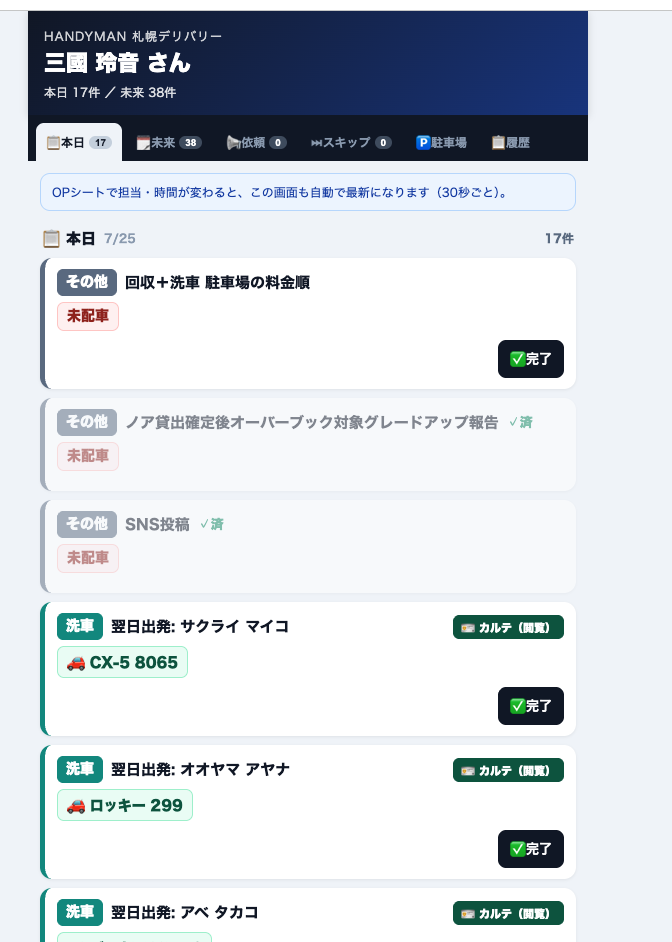
| タブ / ボタン | 内容 |
|---|---|
| 本日 | 今日の自分の担当タスク。 |
| 未来 | 今日より先の自分の予定。 |
| 依頼 | 自分に依頼されたタスク。 |
| スキップ | スキップ（後回し）にしたタスク。 |
| 駐車場 | 駐車場の状態（⑧参照）。 |
| 履歴 | 自分の対応履歴。 |
| ✅完了 | そのタスクが終わったら押す＝完了にする。 |
| 🪪カルテ（閲覧） | お客様のマイページ（閲覧専用）を開いて予約内容を確認。 |
| バッジ | 意味 |
|---|---|
| R J S O HP KEY | 予約もと（R=楽天／J=じゃらん／S=スカイチケット／O=エアトリ／HP=公式直販／KEY=KEYDROP） |
| 📱OK | LINE連携済＝自動送信できる。出発/到着などの連絡がボタンで自動送信。 |
| 📱手動 | LINE未連携。連絡は手動（コピーして送る）。 |
| 🚨連絡不可 | LINE・電話・メールが無い＝要注意。事前に対応を。 |
| 🪪免許OK | お客様がマイページで免許証アップ済。貸出前に確認。 |
| 🪪免許なし | 免許証が未提出（DEL/COLカードに赤で表示）。タップで免許証アップロード画面が開く→スタッフが手動で撮影・登録します。 |
| 📱MyP | マイページ発行／連携済。 |
| 💰決済 | お支払い済み。 |
| C(チャイルド)×1 等 | オプション（B=ベビー／C=チャイルド／J=ジュニアシート／USB／日傘）と数量。 |
| NOC / 免責 / フル | 補償プラン。 |
| 📍 場所 | お届け／回収先。タップでGoogleマップが開く。 |
| 🕐 時刻 | お届け／回収の予定時刻。 |
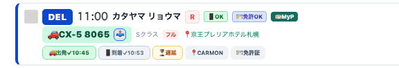
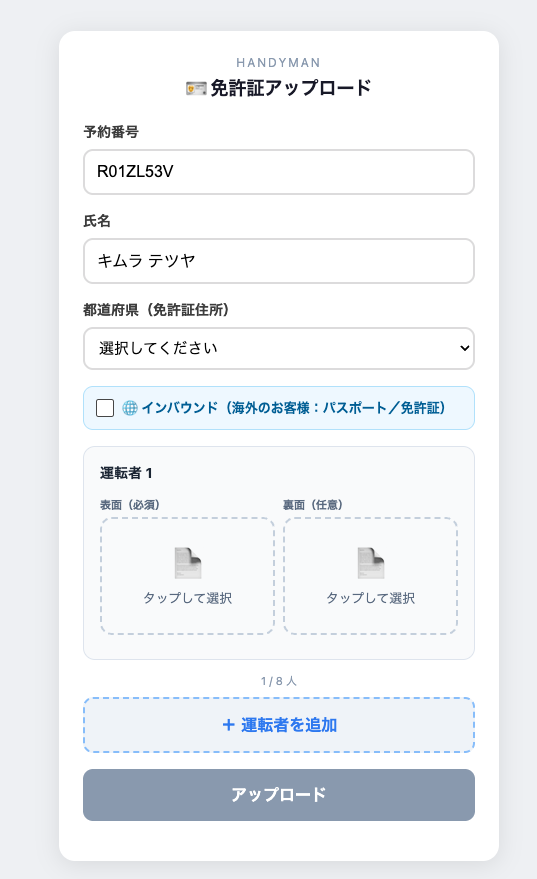
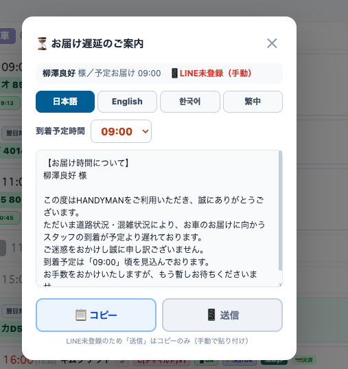
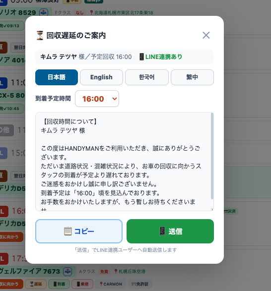
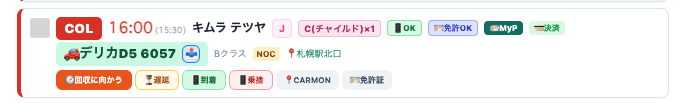
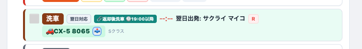
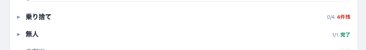
上のタブ：入庫／ステータス／メンテ／洗車／管理／設定。よく使うのは「入庫」と「ステータス」。
上に 枠数／駐車台数／出庫台数、✅入庫OK・空き◯枠 が出ます。「入庫する車両を選択」のプルダウンから車を選び、置いた枠を指定します。「倉庫車」＝備品を積んで出している車も表示。
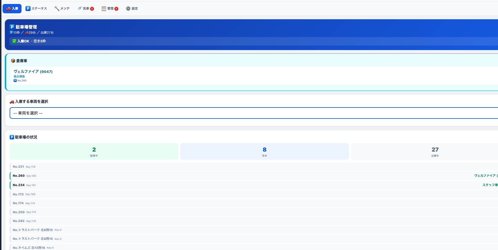
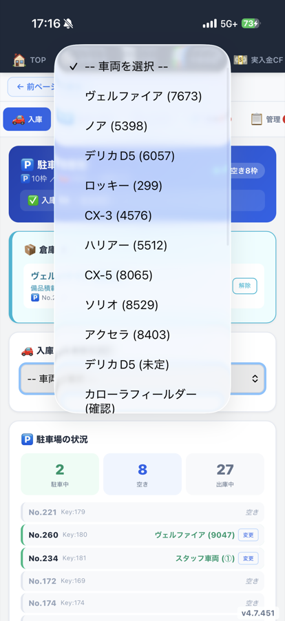
各スポット（SPOT番号・Key番号）が「空き」か「車名＋ナンバー」で並びます。
| ボタン | いつ押す |
|---|---|
| 入庫 | 空きスポットに車を入れる時（→車両を選ぶ）。 |
| 出庫 | 車が入っているスポットから車を出す時。 |
| 詳細 | そのスポットのメモ・入替など。 |
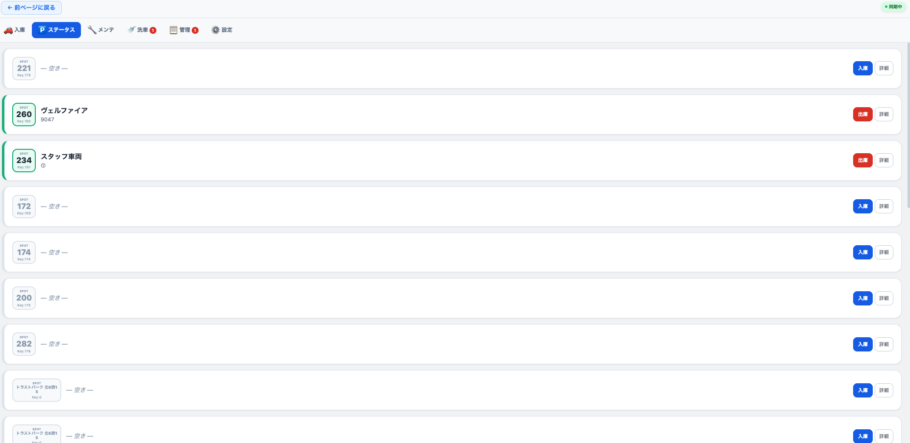
| 洗車 | 各車の洗車状態：❌未洗車 → 🧹内洗済 → ✨洗車済。進んだら更新。 |
| メンテ | 修理・車検で業者に入庫／出庫予定を記録。 |
| 管理 | スポットの追加・車両の追加など。 |